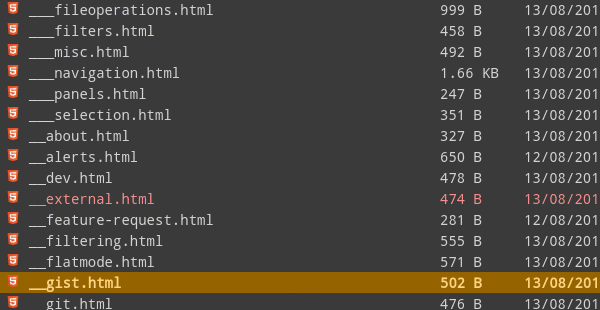

<!-- EXTERNAL  -->
<section class='special'>
    <div class='cols center'>
        <div class='col img'>
            
        </div>
        <div class='col'>
            <h3>
                <i class='fa fa-gavel'></i> External Programs
            </h3>
            <p>
                Configure hot-keys to run external tools.
            </p>
        </div>
    </div>
</section>